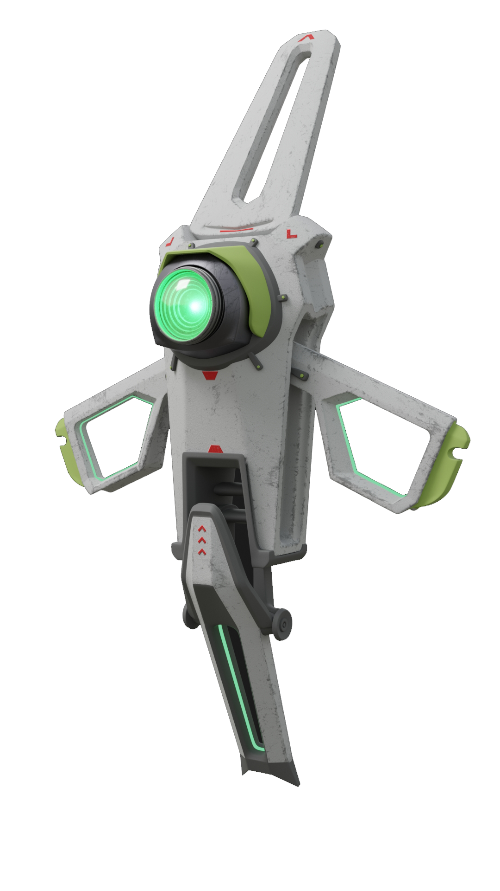

Crypto specializes in secrets. A brilliant hacker and encryption expert, he uses aerial drones to spy on his opponents in the Apex Arena without being seen. He also has a secret of his own: his name is Tae Joon Park, and he joined the Apex Games to find the people who framed him for murder. An orphan abandoned at a young age, Tae Joon escaped a life of squalor by becoming a computer engineer for the Mercenary Syndicate, along with his foster sister, Mila Alexander. One day, Tae Joon and Mila stumbled upon an algorithm that could predict the result of any Apex Games match, hidden away in the Games’ own computer systems. That caught the attention of the wrong people - the next day, Mila disappeared, and Tae Joon was forced to into hiding after he was framed for her murder. He’s now joined the Games to clear his name - because sometimes the spotlight is the best place to hide.
